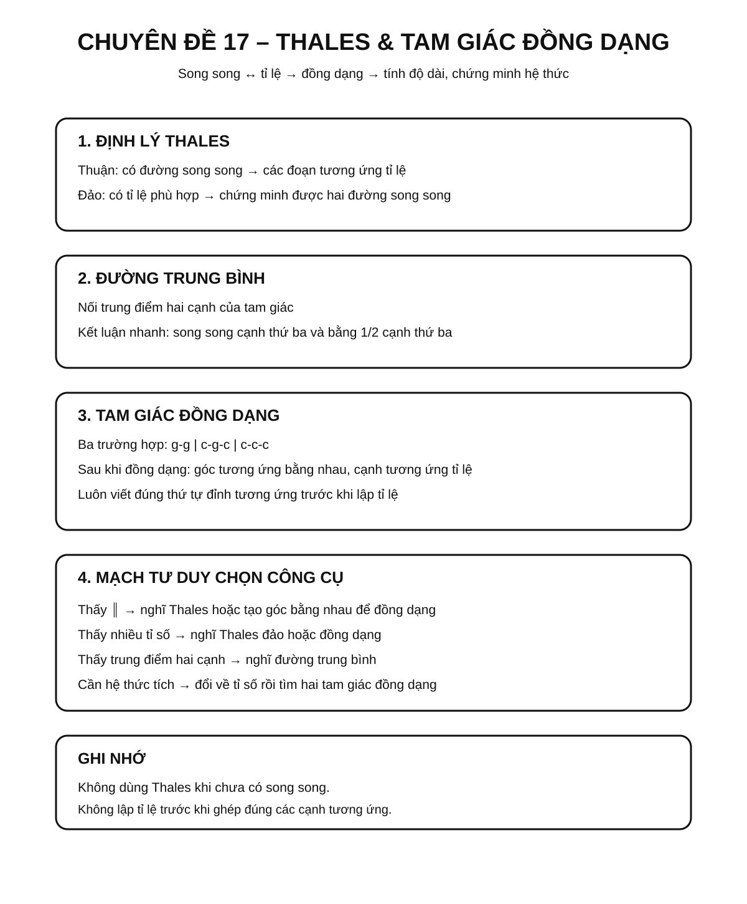
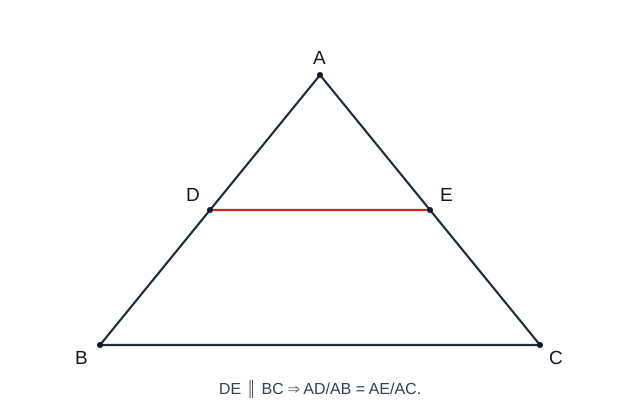
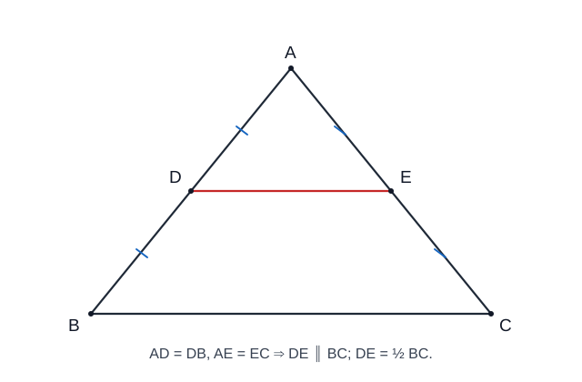
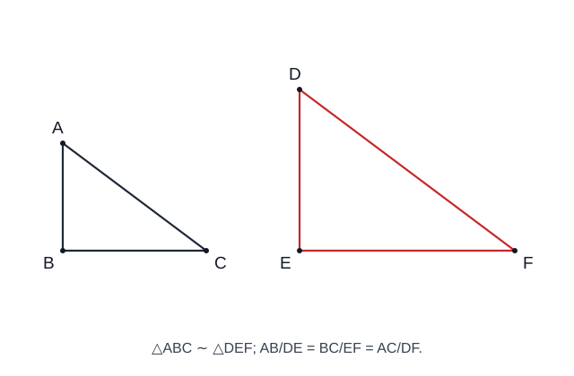
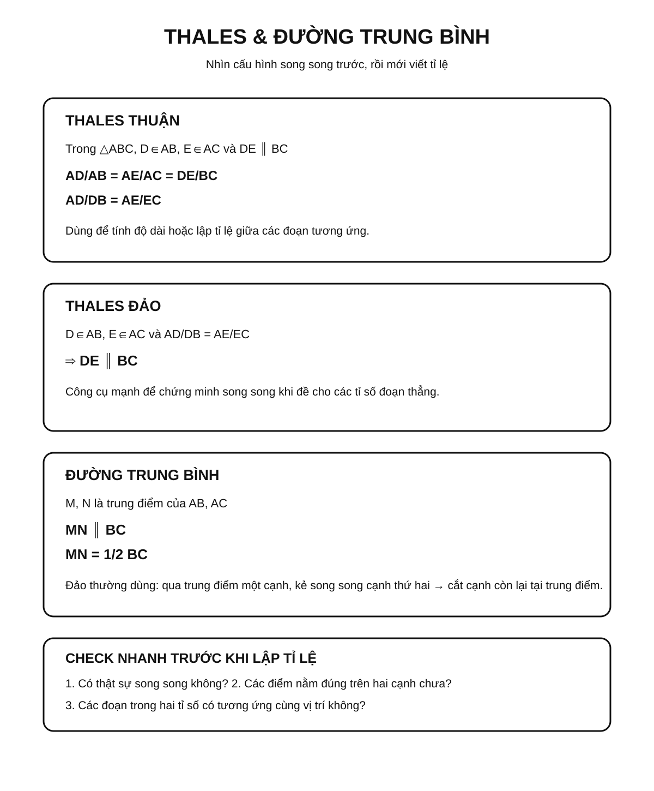
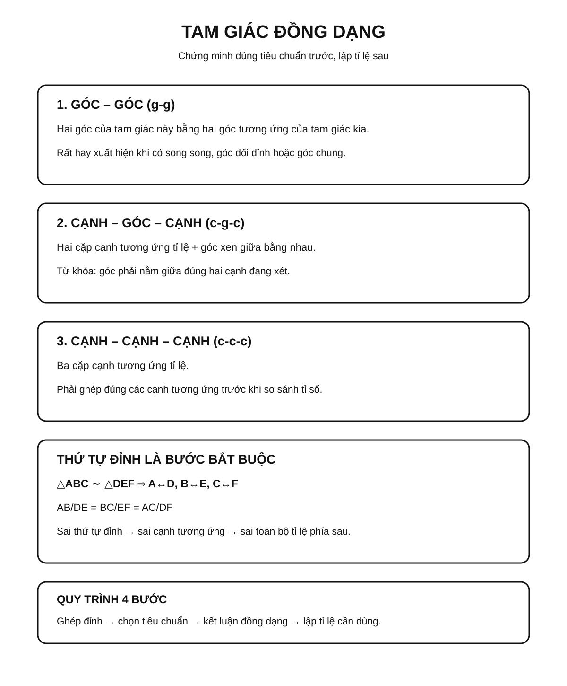
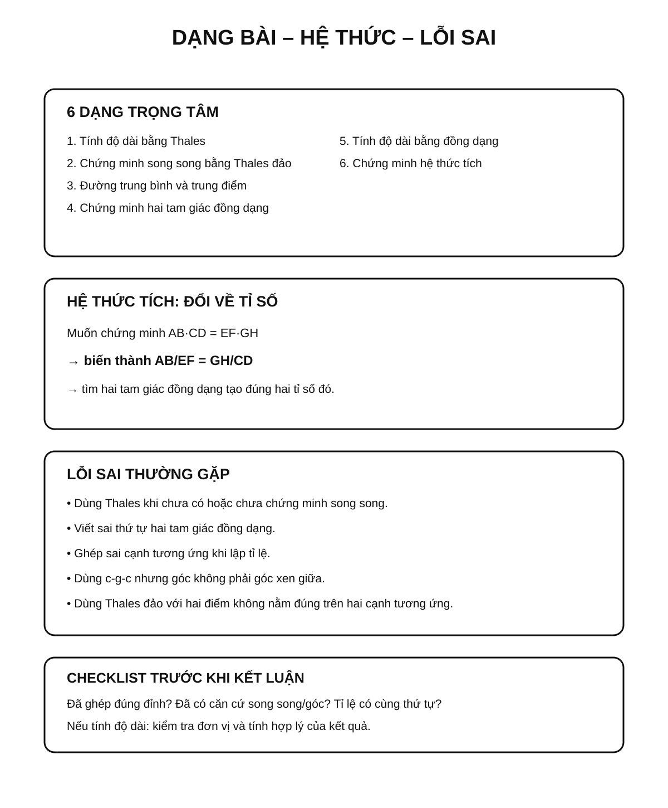

Chuyên đề 17 – Định lý Thales và tam giác đồng dạng
Trạng thái: Đã kiểm định nội dung học thuật; cấu trúc Roadmap chuẩn 11 mục.
Lớp trọng tâm: 8 Mạch kiến thức: Hình học Mức ưu tiên: ⭐⭐⭐⭐⭐
🧭 1. Bản đồ kiến thức
THALES & TAM GIÁC ĐỒNG DẠNG
│
├── Định lý Thales thuận
│ └── Đường song song → các đoạn tương ứng tỉ lệ
│
├── Định lý Thales đảo
│ └── Các đoạn tương ứng tỉ lệ → suy ra song song
│
├── Đường trung bình tam giác
│ ├── Song song với cạnh thứ ba
│ └── Bằng một nửa cạnh thứ ba
│
└── Tam giác đồng dạng
├── g-g
├── c-g-c
└── c-c-c
Mạch tư duy trọng tâm:
song song ↔ tỉ lệ → đồng dạng → suy ra góc, độ dài và các hệ thức hình học.
Infographic – Tổng quan chuyên đề

Minh họa trực quan
1. Định lý Thales trong tam giác

Nếu một đường thẳng song song với một cạnh của tam giác và cắt hai cạnh còn lại, thì nó tạo ra các đoạn thẳng tương ứng tỉ lệ.
Với DE ∥ BC trong tam giác ABC:
AD/AB = AE/AC = DE/BC
Ngoài ra:
AD/DB = AE/EC
2. Đường trung bình trong tam giác

Đường trung bình của tam giác là đoạn thẳng nối trung điểm của hai cạnh.
Nếu M, N lần lượt là trung điểm của AB, AC thì:
MN ∥ BC
và:
MN = 1/2 BC
Đây có thể xem là một hệ quả rất quan trọng của định lý Thales.
3. Tam giác đồng dạng

Hai tam giác đồng dạng có các góc tương ứng bằng nhau và các cạnh tương ứng tỉ lệ.
Nếu:
△ABC ∼ △A'B'C'
thì:
AB/A'B' = BC/B'C' = AC/A'C'
và:
∠A = ∠A', ∠B = ∠B', ∠C = ∠C'
Ba trường hợp đồng dạng cần nhớ
| Trường hợp | Điều kiện nhận biết | Viết tắt |
|---|---|---|
| Góc – góc | Hai góc của tam giác này bằng hai góc tương ứng của tam giác kia | g-g |
| Cạnh – góc – cạnh | Hai cặp cạnh tương ứng tỉ lệ và góc xen giữa bằng nhau | c-g-c |
| Cạnh – cạnh – cạnh | Ba cặp cạnh tương ứng tỉ lệ | c-c-c |
Mối liên hệ giữa Thales và đồng dạng
Một cách nhìn rất quan trọng là Thales và tam giác đồng dạng liên hệ chặt chẽ qua cấu hình đường thẳng song song:
DE ∥ BC
↓
Các góc tương ứng bằng nhau
↓
△ADE ∼ △ABC
↓
Các cạnh tương ứng tỉ lệ
Trong Roadmap, sơ đồ trên dùng để kết nối hai công cụ; không nhằm thay thế cách phát biểu hay chứng minh riêng của định lý Thales.
Vì vậy, khi gặp bài toán có đường thẳng song song trong tam giác, nên nghĩ ngay đến hai hướng:
- dùng định lý Thales;
- chứng minh hai tam giác đồng dạng.
Mẹo giải bài
- Thấy
∥→ nghĩ đến Thales hoặc góc bằng nhau. - Thấy nhiều tỉ số cạnh → nghĩ đến tam giác đồng dạng.
- Thấy trung điểm hai cạnh → nghĩ đến đường trung bình.
- Khi viết đồng dạng, phải ghi đúng thứ tự các đỉnh tương ứng.
Ví dụ:
△ABC ∼ △DEF
thì phải hiểu:
A ↔ D, B ↔ E, C ↔ F.
🎯 2. Mục tiêu cần đạt
Sau khi hoàn thành chuyên đề, học sinh cần:
- [ ] Phát biểu và vận dụng được định lý Thales thuận và đảo.
- [ ] Nhận biết và sử dụng được đường trung bình trong tam giác.
- [ ] Nắm chắc ba trường hợp đồng dạng
g-g,c-g-c,c-c-c. - [ ] Viết đúng thứ tự các đỉnh tương ứng khi lập hai tam giác đồng dạng.
- [ ] Dùng đồng dạng để tính độ dài, chứng minh tỉ số/hệ thức và xử lý tỉ số chu vi, diện tích.
- [ ] Biết chuyển đổi linh hoạt giữa song song, góc bằng nhau và tỉ lệ cạnh.
📖 3. Kiến thức cốt lõi
3.1. Định lý Thales thuận
Trong tam giác ABC, nếu D ∈ AB, E ∈ AC và DE ∥ BC thì:
AD/AB = AE/AC = DE/BC
và:
AD/DB = AE/EC
Từ đây có thể tính một đoạn chưa biết khi biết các đoạn còn lại.
3.2. Định lý Thales đảo
Trong tam giác ABC, nếu D nằm trên cạnh AB, E nằm trên cạnh AC và:
AD/DB = AE/EC
thì:
DE ∥ BC
Ở đây đang xét cấu hình các điểm nằm trên hai cạnh của tam giác, nên các độ dài đều là độ dài đoạn thẳng dương.
Đây là công cụ rất mạnh để chứng minh hai đường thẳng song song.
3.3. Đường trung bình của tam giác
Nếu M, N lần lượt là trung điểm của AB, AC thì:
MN ∥ BC
và:
MN = 1/2 BC
Một dạng đảo thường dùng:
- nếu một đường thẳng đi qua trung điểm của một cạnh của tam giác, song song với cạnh thứ hai và cắt cạnh còn lại, thì giao điểm đó là trung điểm của cạnh còn lại.
Infographic – Thales và đường trung bình

3.4. Tam giác đồng dạng
Nếu △ABC ∼ △DEF thì:
∠A = ∠D, ∠B = ∠E, ∠C = ∠F
và:
AB/DE = BC/EF = AC/DF
Điểm rất quan trọng là thứ tự ký hiệu:
△ABC ∼ △DEF
nghĩa là:
A ↔ D, B ↔ E, C ↔ F.
3.5. Ba trường hợp đồng dạng
Góc – góc (g-g)
Hai góc tương ứng bằng nhau.
Cạnh – góc – cạnh (c-g-c)
Hai cặp cạnh tương ứng tỉ lệ và góc xen giữa bằng nhau.
Cạnh – cạnh – cạnh (c-c-c)
Ba cặp cạnh tương ứng tỉ lệ.
3.5A. Tỉ số đồng dạng và các hệ quả đo lường
Nếu △ABC ∼ △DEF và:
AB/DE = BC/EF = CA/FD = k
thì k gọi là tỉ số đồng dạng của tam giác ABC đối với tam giác DEF. Khi đó:
- tỉ số chu vi bằng
k; - tỉ số các đường cao tương ứng bằng
k; - tỉ số các trung tuyến tương ứng bằng
k; - tỉ số các đường phân giác tương ứng bằng
k; - tỉ số diện tích bằng
k².
Đặc biệt:
S_ABC / S_DEF = k²
Lỗi hay gặp: hai tam giác có tỉ số cạnh bằng
kkhông có tỉ số diện tích bằngk; diện tích thay đổi theo bình phương tỉ số đồng dạng.
Infographic – Tam giác đồng dạng

3.6. Quy trình chọn công cụ
| Dấu hiệu | Nên nghĩ tới |
|---|---|
| Có đường song song trong tam giác | Thales hoặc đồng dạng |
| Có nhiều tỉ số đoạn thẳng | Thales đảo hoặc đồng dạng |
| Có hai góc bằng nhau | Đồng dạng g-g |
| Có trung điểm hai cạnh | Đường trung bình |
| Cần chứng minh song song | Thales đảo |
| Cần tính độ dài | Tỉ lệ từ Thales / đồng dạng |
🔗 4. Kiến thức liên quan
- Kiến thức nên ôn trước: 14 – Tam giác, 16 – Tứ giác
- Liên hệ mạnh: góc so le trong, đồng vị, song song, trung điểm.
- Chuyên đề sử dụng tiếp: 18 – Hệ thức lượng, 19 – Đường tròn, 20 – Hình học tổng hợp
🧩 5. Các dạng bài cần nắm vững
Infographic – Dạng bài, hệ thức và lỗi sai

Dạng 1. Tính độ dài bằng định lý Thales
Lập đúng tỉ lệ giữa các đoạn tương ứng rồi giải phương trình.
Dạng 2. Chứng minh hai đường thẳng song song
Dùng Thales đảo sau khi chứng minh được các tỉ số cần thiết.
Dạng 3. Đường trung bình
Khai thác trung điểm để suy ra song song và độ dài bằng nửa cạnh thứ ba.
Dạng 4. Chứng minh hai tam giác đồng dạng
Chọn một trong ba tiêu chuẩn g-g, c-g-c, c-c-c.
Dạng 5. Tính độ dài bằng đồng dạng
Sau khi có đồng dạng, viết đúng tỉ số các cạnh tương ứng.
Dạng 6. Chứng minh hệ thức tích
Biến hệ thức tích thành tỉ số, sau đó tìm hai tam giác đồng dạng thích hợp.
Dạng 7. Bài tổng hợp
Kết hợp song song → góc bằng nhau → đồng dạng → tỉ lệ → kết luận.
🚀 6. Dạng bài thi vào lớp 10
Trong Roadmap ôn thi vào lớp 10, đây là một chuyên đề nền tảng có mức ưu tiên rất cao.
Các kỹ năng cần chắc: 1. Chứng minh hai tam giác đồng dạng. 2. Tính hoặc chứng minh tỉ số đoạn thẳng. 3. Chứng minh một hệ thức tích. 4. Chứng minh song song bằng Thales đảo. 5. Dùng đồng dạng làm bước trung gian trong bài đường tròn.
Mức ưu tiên ôn thi: ⭐⭐⭐⭐⭐.
⚠️ 7. Lỗi sai thường gặp
| Lỗi sai | Cách tránh |
|---|---|
| Viết sai thứ tự tam giác đồng dạng | Ghép đúng các đỉnh tương ứng trước khi viết |
| Lập tỉ lệ cạnh không tương ứng | Viết sơ đồ A↔D, B↔E, C↔F |
| Dùng Thales khi chưa có song song | Kiểm tra giả thiết hoặc chứng minh song song trước |
| Dùng Thales đảo nhưng chọn sai tỉ lệ | Hai điểm phải nằm trên hai cạnh tương ứng |
Quên điều kiện góc xen giữa trong c-g-c |
Phải là góc nằm giữa hai cạnh đang xét |
| Tính đúng nhưng kết luận sai đơn vị | Ghi đơn vị ở bước cuối |
📝 8. Luyện tập
Phần luyện tập chính đã chuyển sang Practice Room để tách rõ Core với Entrance10/Challenge và ghi learner evidence theo skill.
✅ 9. Tự kiểm tra
Sau khi luyện, làm Core Readiness Check 10 câu. Kết quả là soft mastery: dùng để gợi ý ôn lại, không khóa lộ trình.
🔄 10. Liên kết Roadmap
- ← Trước: 14 – Tam giác, 16 – Tứ giác
- → Tiếp theo: 18 – Hệ thức lượng
-
→ Liên hệ: 19 – Đường tròn, 20 – Hình học tổng hợp
-
✏️ Luyện tập: Bài tập Chuyên đề 17
- ✅ Tự kiểm tra: Tự kiểm tra Chuyên đề 17
Xem toàn bộ hệ thống tại Blueprint 25 chuyên đề.
🏁 11. Điều kiện hoàn thành
- [ ] Đã học đủ 5 chặng KNTT Core ở đầu trang.
- [ ] Đã luyện Practice Room và chữa lại các câu sai.
- [ ] Đã làm Core Readiness Check; khoảng 80% trở lên là tín hiệu sẵn sàng.
- [ ] Mọi kết luận hình học dựa trên giả thiết/định lí, không dựa vào hình vẽ.
Soft Mastery
Kết quả không khóa chuyên đề tiếp theo; evidence yếu chỉ tạo gợi ý ôn đúng skill.